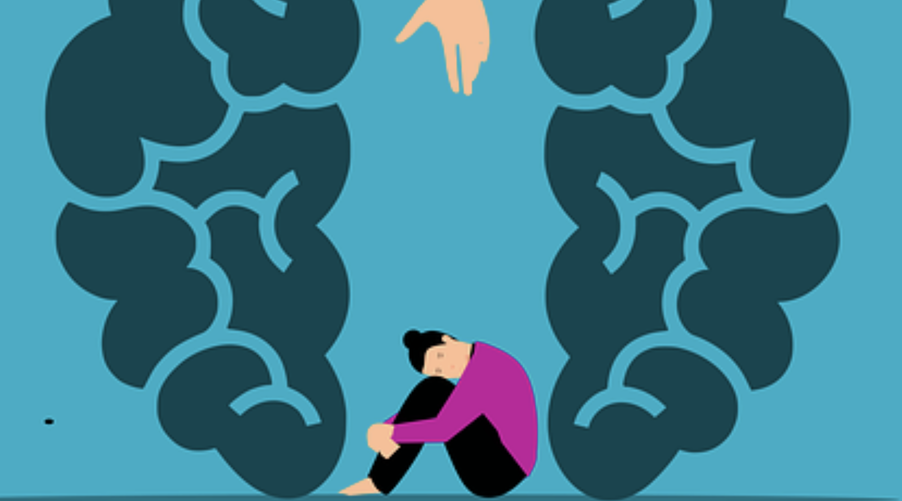

Mental Illness

A person with mental health issues can get help through several ways. One way is, that they can talk to someone they know who likely had the same issue. This is effective since it allows them to communicate their feelings/struggles. Another way is, to get professional help since they know what the person may be experiencing. The benefits is it improves their thoughts/feelings, and they may think that things will work out or get better.
Getting help from mental health professionals can greatly support people who are experiencing mental illness. Trained professionals such as therapists, psychologists, and psychiatrists understand mental health conditions and can provide effective treatments like therapy, coping strategies, and sometimes medication. One major benefit is that professionals can help people better understand their thoughts, feelings, and behaviors. They also teach practical skills for managing stress, anxiety, and difficult emotions. Another benefit is having a safe, confidential space to talk openly without fear of judgment. Getting professional help can also lead to improved emotional well-being, healthier relationships, better problem-solving skills, and a higher quality of life. Overall, professional support helps people manage symptoms, build resilience, and work toward long-term mental health and stability.
